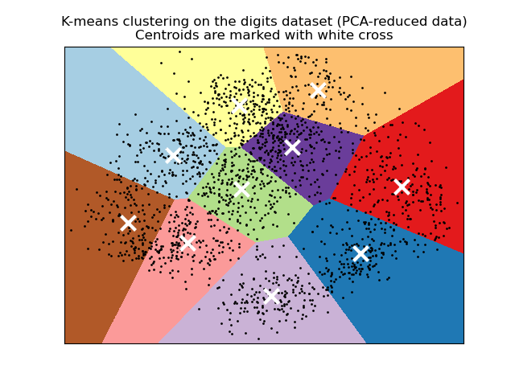
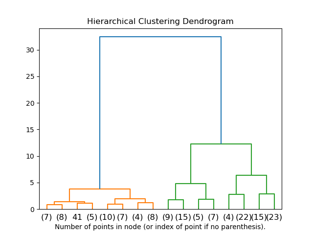
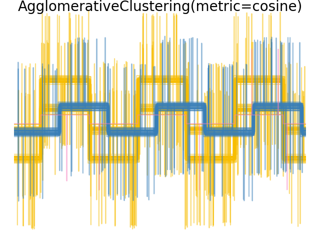
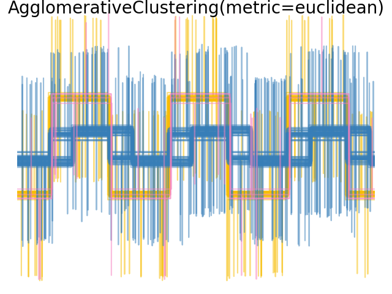
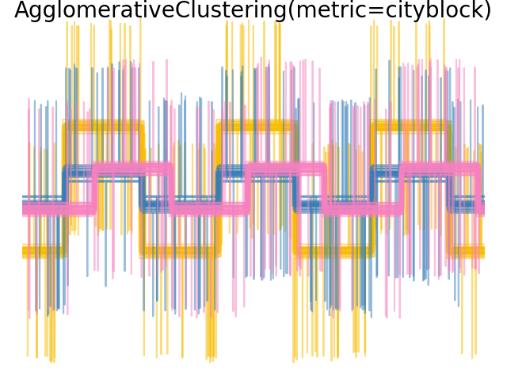

2.3. Clustering#
Clustering of
unlabeled data can be performed with the module sklearn.cluster.
Each clustering algorithm comes in two variants: a class, that implements
the fit method to learn the clusters on train data, and a function,
that, given train data, returns an array of integer labels corresponding
to the different clusters. For the class, the labels over the training
data can be found in the labels_ attribute.
2.3.1. Overview of clustering methods#

A comparison of the clustering algorithms in scikit-learn#
Method name |
Parameters |
Scalability |
Usecase |
Geometry (metric used) |
|---|---|---|---|---|
number of clusters |
Very large |
General-purpose, even cluster size, flat geometry, not too many clusters, inductive |
Distances between points |
|
damping, sample preference |
Not scalable with n_samples |
Many clusters, uneven cluster size, non-flat geometry, inductive |
Graph distance (e.g. nearest-neighbor graph) |
|
bandwidth |
Not scalable with |
Many clusters, uneven cluster size, non-flat geometry, inductive |
Distances between points |
|
number of clusters |
Medium |
Few clusters, even cluster size, non-flat geometry, transductive |
Graph distance (e.g. nearest-neighbor graph) |
|
number of clusters or distance threshold |
Large |
Many clusters, possibly connectivity constraints, transductive |
Distances between points |
|
number of clusters or distance threshold, linkage type, distance |
Large |
Many clusters, possibly connectivity constraints, non Euclidean distances, transductive |
Any pairwise distance |
|
neighborhood size |
Very large |
Non-flat geometry, uneven cluster sizes, outlier removal, transductive |
Distances between nearest points |
|
minimum cluster membership, minimum point neighbors |
large |
Non-flat geometry, uneven cluster sizes, outlier removal, transductive, hierarchical, variable cluster density |
Distances between nearest points |
|
minimum cluster membership |
Very large |
Non-flat geometry, uneven cluster sizes, variable cluster density, outlier removal, transductive |
Distances between points |
|
many |
Not scalable |
Flat geometry, good for density estimation, inductive |
Mahalanobis distances to centers |
|
branching factor, threshold, optional global clusterer. |
Large |
Large dataset, outlier removal, data reduction, inductive |
Euclidean distance between points |
|
number of clusters |
Very large |
General-purpose, even cluster size, flat geometry, no empty clusters, inductive, hierarchical |
Distances between points |
Non-flat geometry clustering is useful when the clusters have a specific shape, i.e. a non-flat manifold, and the standard euclidean distance is not the right metric. This case arises in the two top rows of the figure above.
Gaussian mixture models, useful for clustering, are described in another chapter of the documentation dedicated to mixture models. KMeans can be seen as a special case of Gaussian mixture model with equal covariance per component.
Transductive clustering methods (in contrast to inductive clustering methods) are not designed to be applied to new, unseen data.
2.3.2. K-means#
The KMeans algorithm clusters data by trying to separate samples in n
groups of equal variance, minimizing a criterion known as the inertia or
within-cluster sum-of-squares (see below). This algorithm requires the number
of clusters to be specified. It scales well to large numbers of samples and has
been used across a large range of application areas in many different fields.
The k-means algorithm divides a set of \(N\) samples \(X\) into \(K\) disjoint clusters \(C\), each described by the mean \(\mu_j\) of the samples in the cluster. The means are commonly called the cluster “centroids”; note that they are not, in general, points from \(X\), although they live in the same space.
The K-means algorithm aims to choose centroids that minimise the inertia, or within-cluster sum-of-squares criterion:
Inertia can be recognized as a measure of how internally coherent clusters are. It suffers from various drawbacks:
Inertia makes the assumption that clusters are convex and isotropic, which is not always the case. It responds poorly to elongated clusters, or manifolds with irregular shapes.
Inertia is not a normalized metric: we just know that lower values are better and zero is optimal. But in very high-dimensional spaces, Euclidean distances tend to become inflated (this is an instance of the so-called “curse of dimensionality”). Running a dimensionality reduction algorithm such as Principal component analysis (PCA) prior to k-means clustering can alleviate this problem and speed up the computations.
For more detailed descriptions of the issues shown above and how to address them, refer to the examples Demonstration of k-means assumptions and Selecting the number of clusters with silhouette analysis on KMeans clustering.
K-means is often referred to as Lloyd’s algorithm. In basic terms, the algorithm has three steps. The first step chooses the initial centroids, with the most basic method being to choose \(k\) samples from the dataset \(X\). After initialization, K-means consists of looping between the two other steps. The first step assigns each sample to its nearest centroid. The second step creates new centroids by taking the mean value of all of the samples assigned to each previous centroid. The difference between the old and the new centroids are computed and the algorithm repeats these last two steps until this value is less than a threshold. In other words, it repeats until the centroids do not move significantly.
K-means is equivalent to the expectation-maximization algorithm with a small, all-equal, diagonal covariance matrix.
The algorithm can also be understood through the concept of Voronoi diagrams. First the Voronoi diagram of the points is calculated using the current centroids. Each segment in the Voronoi diagram becomes a separate cluster. Secondly, the centroids are updated to the mean of each segment. The algorithm then repeats this until a stopping criterion is fulfilled. Usually, the algorithm stops when the relative decrease in the objective function between iterations is less than the given tolerance value. This is not the case in this implementation: iteration stops when centroids move less than the tolerance.
Given enough time, K-means will always converge, however this may be to a local
minimum. This is highly dependent on the initialization of the centroids.
As a result, the computation is often done several times, with different
initializations of the centroids. One method to help address this issue is the
k-means++ initialization scheme, which has been implemented in scikit-learn
(use the init='k-means++' parameter). This initializes the centroids to be
(generally) distant from each other, leading to probably better results than
random initialization, as shown in the reference. For a detailed example of
comaparing different initialization schemes, refer to
A demo of K-Means clustering on the handwritten digits data.
K-means++ can also be called independently to select seeds for other
clustering algorithms, see sklearn.cluster.kmeans_plusplus for details
and example usage.
The algorithm supports sample weights, which can be given by a parameter
sample_weight. This allows to assign more weight to some samples when
computing cluster centers and values of inertia. For example, assigning a
weight of 2 to a sample is equivalent to adding a duplicate of that sample
to the dataset \(X\).
K-means can be used for vector quantization. This is achieved using the
transform method of a trained model of KMeans. For an example of
performing vector quantization on an image refer to
Color Quantization using K-Means.
Examples
K-means Clustering: Example usage of
KMeansusing the iris datasetClustering text documents using k-means: Document clustering using
KMeansandMiniBatchKMeansbased on sparse data
2.3.2.1. Low-level parallelism#
KMeans benefits from OpenMP based parallelism through Cython. Small
chunks of data (256 samples) are processed in parallel, which in addition
yields a low memory footprint. For more details on how to control the number of
threads, please refer to our Parallelism notes.
Examples
Demonstration of k-means assumptions: Demonstrating when k-means performs intuitively and when it does not
A demo of K-Means clustering on the handwritten digits data: Clustering handwritten digits
References#
“k-means++: The advantages of careful seeding” Arthur, David, and Sergei Vassilvitskii, Proceedings of the eighteenth annual ACM-SIAM symposium on Discrete algorithms, Society for Industrial and Applied Mathematics (2007)
2.3.2.2. Mini Batch K-Means#
The MiniBatchKMeans is a variant of the KMeans algorithm
which uses mini-batches to reduce the computation time, while still attempting
to optimise the same objective function. Mini-batches are subsets of the input
data, randomly sampled in each training iteration. These mini-batches
drastically reduce the amount of computation required to converge to a local
solution. In contrast to other algorithms that reduce the convergence time of
k-means, mini-batch k-means produces results that are generally only slightly
worse than the standard algorithm.
The algorithm iterates between two major steps, similar to vanilla k-means. In the first step, \(b\) samples are drawn randomly from the dataset, to form a mini-batch. These are then assigned to the nearest centroid. In the second step, the centroids are updated. In contrast to k-means, this is done on a per-sample basis. For each sample in the mini-batch, the assigned centroid is updated by taking the streaming average of the sample and all previous samples assigned to that centroid. This has the effect of decreasing the rate of change for a centroid over time. These steps are performed until convergence or a predetermined number of iterations is reached.
MiniBatchKMeans converges faster than KMeans, but the quality
of the results is reduced. In practice this difference in quality can be quite
small, as shown in the example and cited reference.
Examples
Comparison of the K-Means and MiniBatchKMeans clustering algorithms: Comparison of
KMeansandMiniBatchKMeansClustering text documents using k-means: Document clustering using
KMeansandMiniBatchKMeansbased on sparse data
References#
“Web Scale K-Means clustering” D. Sculley, Proceedings of the 19th international conference on World wide web (2010)
2.3.3. Affinity Propagation#
AffinityPropagation creates clusters by sending messages between
pairs of samples until convergence. A dataset is then described using a small
number of exemplars, which are identified as those most representative of other
samples. The messages sent between pairs represent the suitability for one
sample to be the exemplar of the other, which is updated in response to the
values from other pairs. This updating happens iteratively until convergence,
at which point the final exemplars are chosen, and hence the final clustering
is given.
Affinity Propagation can be interesting as it chooses the number of clusters based on the data provided. For this purpose, the two important parameters are the preference, which controls how many exemplars are used, and the damping factor which damps the responsibility and availability messages to avoid numerical oscillations when updating these messages.
The main drawback of Affinity Propagation is its complexity. The algorithm has a time complexity of the order \(O(N^2 T)\), where \(N\) is the number of samples and \(T\) is the number of iterations until convergence. Further, the memory complexity is of the order \(O(N^2)\) if a dense similarity matrix is used, but reducible if a sparse similarity matrix is used. This makes Affinity Propagation most appropriate for small to medium sized datasets.
Algorithm description#
The messages sent between points belong to one of two categories. The first is the responsibility \(r(i, k)\), which is the accumulated evidence that sample \(k\) should be the exemplar for sample \(i\). The second is the availability \(a(i, k)\) which is the accumulated evidence that sample \(i\) should choose sample \(k\) to be its exemplar, and considers the values for all other samples that \(k\) should be an exemplar. In this way, exemplars are chosen by samples if they are (1) similar enough to many samples and (2) chosen by many samples to be representative of themselves.
More formally, the responsibility of a sample \(k\) to be the exemplar of sample \(i\) is given by:
Where \(s(i, k)\) is the similarity between samples \(i\) and \(k\). The availability of sample \(k\) to be the exemplar of sample \(i\) is given by:
To begin with, all values for \(r\) and \(a\) are set to zero, and the calculation of each iterates until convergence. As discussed above, in order to avoid numerical oscillations when updating the messages, the damping factor \(\lambda\) is introduced to iteration process:
where \(t\) indicates the iteration times.
Examples
Demo of affinity propagation clustering algorithm: Affinity Propagation on a synthetic 2D datasets with 3 classes
Visualizing the stock market structure Affinity Propagation on financial time series to find groups of companies
2.3.4. Mean Shift#
MeanShift clustering aims to discover blobs in a smooth density of
samples. It is a centroid based algorithm, which works by updating candidates
for centroids to be the mean of the points within a given region. These
candidates are then filtered in a post-processing stage to eliminate
near-duplicates to form the final set of centroids.
Mathematical details#
The position of centroid candidates is iteratively adjusted using a technique called hill climbing, which finds local maxima of the estimated probability density. Given a candidate centroid \(x\) for iteration \(t\), the candidate is updated according to the following equation:
Where \(m\) is the mean shift vector that is computed for each centroid that points towards a region of the maximum increase in the density of points. To compute \(m\) we define \(N(x)\) as the neighborhood of samples within a given distance around \(x\). Then \(m\) is computed using the following equation, effectively updating a centroid to be the mean of the samples within its neighborhood:
In general, the equation for \(m\) depends on a kernel used for density estimation. The generic formula is:
In our implementation, \(K(x)\) is equal to 1 if \(x\) is small enough and is equal to 0 otherwise. Effectively \(K(y - x)\) indicates whether \(y\) is in the neighborhood of \(x\).
The algorithm automatically sets the number of clusters, instead of relying on a
parameter bandwidth, which dictates the size of the region to search through.
This parameter can be set manually, but can be estimated using the provided
estimate_bandwidth function, which is called if the bandwidth is not set.
The algorithm is not highly scalable, as it requires multiple nearest neighbor searches during the execution of the algorithm. The algorithm is guaranteed to converge, however the algorithm will stop iterating when the change in centroids is small.
Labelling a new sample is performed by finding the nearest centroid for a given sample.

Examples
A demo of the mean-shift clustering algorithm: Mean Shift clustering on a synthetic 2D datasets with 3 classes.
References#
“Mean shift: A robust approach toward feature space analysis” D. Comaniciu and P. Meer, IEEE Transactions on Pattern Analysis and Machine Intelligence (2002)
2.3.5. Spectral clustering#
SpectralClustering performs a low-dimension embedding of the
affinity matrix between samples, followed by clustering, e.g., by KMeans,
of the components of the eigenvectors in the low dimensional space.
It is especially computationally efficient if the affinity matrix is sparse
and the amg solver is used for the eigenvalue problem (Note, the amg solver
requires that the pyamg module is installed.)
The present version of SpectralClustering requires the number of clusters to be specified in advance. It works well for a small number of clusters, but is not advised for many clusters.
For two clusters, SpectralClustering solves a convex relaxation of the normalized cuts problem on the similarity graph: cutting the graph in two so that the weight of the edges cut is small compared to the weights of the edges inside each cluster. This criteria is especially interesting when working on images, where graph vertices are pixels, and weights of the edges of the similarity graph are computed using a function of a gradient of the image.
Warning
Transforming distance to well-behaved similarities
Note that if the values of your similarity matrix are not well distributed, e.g. with negative values or with a distance matrix rather than a similarity, the spectral problem will be singular and the problem not solvable. In which case it is advised to apply a transformation to the entries of the matrix. For instance, in the case of a signed distance matrix, is common to apply a heat kernel:
similarity = np.exp(-beta * distance / distance.std())
See the examples for such an application.
Examples
Spectral clustering for image segmentation: Segmenting objects from a noisy background using spectral clustering.
Segmenting the picture of greek coins in regions: Spectral clustering to split the image of coins in regions.
2.3.5.1. Different label assignment strategies#
Different label assignment strategies can be used, corresponding to the
assign_labels parameter of SpectralClustering.
"kmeans" strategy can match finer details, but can be unstable.
In particular, unless you control the random_state, it may not be
reproducible from run-to-run, as it depends on random initialization.
The alternative "discretize" strategy is 100% reproducible, but tends
to create parcels of fairly even and geometrical shape.
The recently added "cluster_qr" option is a deterministic alternative that
tends to create the visually best partitioning on the example application
below.
References#
“Multiclass spectral clustering” Stella X. Yu, Jianbo Shi, 2003
“Simple, direct, and efficient multi-way spectral clustering” Anil Damle, Victor Minden, Lexing Ying, 2019
2.3.5.2. Spectral Clustering Graphs#
Spectral Clustering can also be used to partition graphs via their spectral
embeddings. In this case, the affinity matrix is the adjacency matrix of the
graph, and SpectralClustering is initialized with affinity='precomputed':
>>> from sklearn.cluster import SpectralClustering
>>> sc = SpectralClustering(3, affinity='precomputed', n_init=100,
... assign_labels='discretize')
>>> sc.fit_predict(adjacency_matrix)
References#
“A Tutorial on Spectral Clustering” Ulrike von Luxburg, 2007
“Normalized cuts and image segmentation” Jianbo Shi, Jitendra Malik, 2000
“A Random Walks View of Spectral Segmentation” Marina Meila, Jianbo Shi, 2001
“On Spectral Clustering: Analysis and an algorithm” Andrew Y. Ng, Michael I. Jordan, Yair Weiss, 2001
“Preconditioned Spectral Clustering for Stochastic Block Partition Streaming Graph Challenge” David Zhuzhunashvili, Andrew Knyazev
2.3.6. Hierarchical clustering#
Hierarchical clustering is a general family of clustering algorithms that build nested clusters by merging or splitting them successively. This hierarchy of clusters is represented as a tree (or dendrogram). The root of the tree is the unique cluster that gathers all the samples, the leaves being the clusters with only one sample. See the Wikipedia page for more details.
The AgglomerativeClustering object performs a hierarchical clustering
using a bottom up approach: each observation starts in its own cluster, and
clusters are successively merged together. The linkage criteria determines the
metric used for the merge strategy:
Ward minimizes the sum of squared differences within all clusters. It is a variance-minimizing approach and in this sense is similar to the k-means objective function but tackled with an agglomerative hierarchical approach.
Maximum or complete linkage minimizes the maximum distance between observations of pairs of clusters.
Average linkage minimizes the average of the distances between all observations of pairs of clusters.
Single linkage minimizes the distance between the closest observations of pairs of clusters.
AgglomerativeClustering can also scale to large number of samples
when it is used jointly with a connectivity matrix, but is computationally
expensive when no connectivity constraints are added between samples: it
considers at each step all the possible merges.
2.3.6.1. Different linkage type: Ward, complete, average, and single linkage#
AgglomerativeClustering supports Ward, single, average, and complete
linkage strategies.
Agglomerative cluster has a “rich get richer” behavior that leads to uneven cluster sizes. In this regard, single linkage is the worst strategy, and Ward gives the most regular sizes. However, the affinity (or distance used in clustering) cannot be varied with Ward, thus for non Euclidean metrics, average linkage is a good alternative. Single linkage, while not robust to noisy data, can be computed very efficiently and can therefore be useful to provide hierarchical clustering of larger datasets. Single linkage can also perform well on non-globular data.
Examples
Various Agglomerative Clustering on a 2D embedding of digits: exploration of the different linkage strategies in a real dataset.
Comparing different hierarchical linkage methods on toy datasets: exploration of the different linkage strategies in toy datasets.
2.3.6.2. Visualization of cluster hierarchy#
It’s possible to visualize the tree representing the hierarchical merging of clusters as a dendrogram. Visual inspection can often be useful for understanding the structure of the data, though more so in the case of small sample sizes.
Examples
2.3.6.3. Adding connectivity constraints#
An interesting aspect of AgglomerativeClustering is that
connectivity constraints can be added to this algorithm (only adjacent
clusters can be merged together), through a connectivity matrix that defines
for each sample the neighboring samples following a given structure of the
data. For instance, in the swiss-roll example below, the connectivity
constraints forbid the merging of points that are not adjacent on the swiss
roll, and thus avoid forming clusters that extend across overlapping folds of
the roll.
These constraint are useful to impose a certain local structure, but they also make the algorithm faster, especially when the number of the samples is high.
The connectivity constraints are imposed via an connectivity matrix: a
scipy sparse matrix that has elements only at the intersection of a row
and a column with indices of the dataset that should be connected. This
matrix can be constructed from a-priori information: for instance, you
may wish to cluster web pages by only merging pages with a link pointing
from one to another. It can also be learned from the data, for instance
using sklearn.neighbors.kneighbors_graph to restrict
merging to nearest neighbors as in this example, or
using sklearn.feature_extraction.image.grid_to_graph to
enable only merging of neighboring pixels on an image, as in the
coin example.
Warning
Connectivity constraints with single, average and complete linkage
Connectivity constraints and single, complete or average linkage can enhance
the ‘rich getting richer’ aspect of agglomerative clustering,
particularly so if they are built with
sklearn.neighbors.kneighbors_graph. In the limit of a small
number of clusters, they tend to give a few macroscopically occupied
clusters and almost empty ones. (see the discussion in
Agglomerative clustering with and without structure).
Single linkage is the most brittle linkage option with regard to this issue.
Examples
A demo of structured Ward hierarchical clustering on an image of coins: Ward clustering to split the image of coins in regions.
Hierarchical clustering: structured vs unstructured ward: Example of Ward algorithm on a swiss-roll, comparison of structured approaches versus unstructured approaches.
Feature agglomeration vs. univariate selection: Example of dimensionality reduction with feature agglomeration based on Ward hierarchical clustering.
2.3.6.4. Varying the metric#
Single, average and complete linkage can be used with a variety of distances (or affinities), in particular Euclidean distance (l2), Manhattan distance (or Cityblock, or l1), cosine distance, or any precomputed affinity matrix.
l1 distance is often good for sparse features, or sparse noise: i.e. many of the features are zero, as in text mining using occurrences of rare words.
cosine distance is interesting because it is invariant to global scalings of the signal.
The guidelines for choosing a metric is to use one that maximizes the distance between samples in different classes, and minimizes that within each class.
  Examples
2.3.6.5. Bisecting K-Means#
The BisectingKMeans is an iterative variant of KMeans, using
divisive hierarchical clustering. Instead of creating all centroids at once, centroids
are picked progressively based on a previous clustering: a cluster is split into two
new clusters repeatedly until the target number of clusters is reached.
BisectingKMeans is more efficient than KMeans when the number of
clusters is large since it only works on a subset of the data at each bisection
while KMeans always works on the entire dataset.
Although BisectingKMeans can’t benefit from the advantages of the "k-means++"
initialization by design, it will still produce comparable results than
KMeans(init="k-means++") in terms of inertia at cheaper computational costs, and will
likely produce better results than KMeans with a random initialization.
This variant is more efficient to agglomerative clustering if the number of clusters is small compared to the number of data points.
This variant also does not produce empty clusters.
- There exist two strategies for selecting the cluster to split:
bisecting_strategy="largest_cluster"selects the cluster having the most pointsbisecting_strategy="biggest_inertia"selects the cluster with biggest inertia (cluster with biggest Sum of Squared Errors within)
Picking by largest amount of data points in most cases produces result as accurate as picking by inertia and is faster (especially for larger amount of data points, where calculating error may be costly).
Picking by largest amount of data points will also likely produce clusters of similar
sizes while KMeans is known to produce clusters of different sizes.
Difference between Bisecting K-Means and regular K-Means can be seen on example Bisecting K-Means and Regular K-Means Performance Comparison. While the regular K-Means algorithm tends to create non-related clusters, clusters from Bisecting K-Means are well ordered and create quite a visible hierarchy.
References#
“A Comparison of Document Clustering Techniques” Michael Steinbach, George Karypis and Vipin Kumar, Department of Computer Science and Egineering, University of Minnesota (June 2000)
“Performance Analysis of K-Means and Bisecting K-Means Algorithms in Weblog Data” K.Abirami and Dr.P.Mayilvahanan, International Journal of Emerging Technologies in Engineering Research (IJETER) Volume 4, Issue 8, (August 2016)
“Bisecting K-means Algorithm Based on K-valued Self-determining and Clustering Center Optimization” Jian Di, Xinyue Gou School of Control and Computer Engineering,North China Electric Power University, Baoding, Hebei, China (August 2017)
2.3.7. DBSCAN#
The DBSCAN algorithm views clusters as areas of high density
separated by areas of low density. Due to this rather generic view, clusters
found by DBSCAN can be any shape, as opposed to k-means which assumes that
clusters are convex shaped. The central component to the DBSCAN is the concept
of core samples, which are samples that are in areas of high density. A
cluster is therefore a set of core samples, each close to each other
(measured by some distance measure)
and a set of non-core samples that are close to a core sample (but are not
themselves core samples). There are two parameters to the algorithm,
min_samples and eps,
which define formally what we mean when we say dense.
Higher min_samples or lower eps
indicate higher density necessary to form a cluster.
More formally, we define a core sample as being a sample in the dataset such
that there exist min_samples other samples within a distance of
eps, which are defined as neighbors of the core sample. This tells
us that the core sample is in a dense area of the vector space. A cluster
is a set of core samples that can be built by recursively taking a core
sample, finding all of its neighbors that are core samples, finding all of
their neighbors that are core samples, and so on. A cluster also has a
set of non-core samples, which are samples that are neighbors of a core sample
in the cluster but are not themselves core samples. Intuitively, these samples
are on the fringes of a cluster.
Any core sample is part of a cluster, by definition. Any sample that is not a
core sample, and is at least eps in distance from any core sample, is
considered an outlier by the algorithm.
While the parameter min_samples primarily controls how tolerant the
algorithm is towards noise (on noisy and large data sets it may be desirable
to increase this parameter), the parameter eps is crucial to choose
appropriately for the data set and distance function and usually cannot be
left at the default value. It controls the local neighborhood of the points.
When chosen too small, most data will not be clustered at all (and labeled
as -1 for “noise”). When chosen too large, it causes close clusters to
be merged into one cluster, and eventually the entire data set to be returned
as a single cluster. Some heuristics for choosing this parameter have been
discussed in the literature, for example based on a knee in the nearest neighbor
distances plot (as discussed in the references below).
In the figure below, the color indicates cluster membership, with large circles indicating core samples found by the algorithm. Smaller circles are non-core samples that are still part of a cluster. Moreover, the outliers are indicated by black points below.
Examples
Implementation#
The DBSCAN algorithm is deterministic, always generating the same clusters when
given the same data in the same order. However, the results can differ when
data is provided in a different order. First, even though the core samples will
always be assigned to the same clusters, the labels of those clusters will
depend on the order in which those samples are encountered in the data. Second
and more importantly, the clusters to which non-core samples are assigned can
differ depending on the data order. This would happen when a non-core sample
has a distance lower than eps to two core samples in different clusters. By
the triangular inequality, those two core samples must be more distant than
eps from each other, or they would be in the same cluster. The non-core
sample is assigned to whichever cluster is generated first in a pass through the
data, and so the results will depend on the data ordering.
The current implementation uses ball trees and kd-trees to determine the
neighborhood of points, which avoids calculating the full distance matrix (as
was done in scikit-learn versions before 0.14). The possibility to use custom
metrics is retained; for details, see NearestNeighbors.
Memory consumption for large sample sizes#
This implementation is by default not memory efficient because it constructs a full pairwise similarity matrix in the case where kd-trees or ball-trees cannot be used (e.g., with sparse matrices). This matrix will consume \(n^2\) floats. A couple of mechanisms for getting around this are:
Use OPTICS clustering in conjunction with the
extract_dbscanmethod. OPTICS clustering also calculates the full pairwise matrix, but only keeps one row in memory at a time (memory complexity n).A sparse radius neighborhood graph (where missing entries are presumed to be out of eps) can be precomputed in a memory-efficient way and dbscan can be run over this with
metric='precomputed'. Seesklearn.neighbors.NearestNeighbors.radius_neighbors_graph.The dataset can be compressed, either by removing exact duplicates if these occur in your data, or by using BIRCH. Then you only have a relatively small number of representatives for a large number of points. You can then provide a
sample_weightwhen fitting DBSCAN.
References#
A Density-Based Algorithm for Discovering Clusters in Large Spatial Databases with Noise Ester, M., H. P. Kriegel, J. Sander, and X. Xu, In Proceedings of the 2nd International Conference on Knowledge Discovery and Data Mining, Portland, OR, AAAI Press, pp. 226-231. 1996
DBSCAN revisited, revisited: why and how you should (still) use DBSCAN. Schubert, E., Sander, J., Ester, M., Kriegel, H. P., & Xu, X. (2017). In ACM Transactions on Database Systems (TODS), 42(3), 19.
2.3.8. HDBSCAN#
The HDBSCAN algorithm can be seen as an extension of DBSCAN
and OPTICS. Specifically, DBSCAN assumes that the clustering
criterion (i.e. density requirement) is globally homogeneous.
In other words, DBSCAN may struggle to successfully capture clusters
with different densities.
HDBSCAN alleviates this assumption and explores all possible density
scales by building an alternative representation of the clustering problem.
Note
This implementation is adapted from the original implementation of HDBSCAN, scikit-learn-contrib/hdbscan based on [LJ2017].
Examples
2.3.8.1. Mutual Reachability Graph#
HDBSCAN first defines \(d_c(x_p)\), the core distance of a sample \(x_p\), as the
distance to its min_samples th-nearest neighbor, counting itself. For example,
if min_samples=5 and \(x_*\) is the 5th-nearest neighbor of \(x_p\)
then the core distance is:
Next it defines \(d_m(x_p, x_q)\), the mutual reachability distance of two points \(x_p, x_q\), as:
These two notions allow us to construct the mutual reachability graph
\(G_{ms}\) defined for a fixed choice of min_samples by associating each
sample \(x_p\) with a vertex of the graph, and thus edges between points
\(x_p, x_q\) are the mutual reachability distance \(d_m(x_p, x_q)\)
between them. We may build subsets of this graph, denoted as
\(G_{ms,\varepsilon}\), by removing any edges with value greater than \(\varepsilon\):
from the original graph. Any points whose core distance is less than \(\varepsilon\):
are at this staged marked as noise. The remaining points are then clustered by
finding the connected components of this trimmed graph.
Note
Taking the connected components of a trimmed graph \(G_{ms,\varepsilon}\) is
equivalent to running DBSCAN* with min_samples and \(\varepsilon\). DBSCAN* is a
slightly modified version of DBSCAN mentioned in [CM2013].
2.3.8.2. Hierarchical Clustering#
HDBSCAN can be seen as an algorithm which performs DBSCAN* clustering across all values of \(\varepsilon\). As mentioned prior, this is equivalent to finding the connected components of the mutual reachability graphs for all values of \(\varepsilon\). To do this efficiently, HDBSCAN first extracts a minimum spanning tree (MST) from the fully -connected mutual reachability graph, then greedily cuts the edges with highest weight. An outline of the HDBSCAN algorithm is as follows:
Extract the MST of \(G_{ms}\).
Extend the MST by adding a “self edge” for each vertex, with weight equal to the core distance of the underlying sample.
Initialize a single cluster and label for the MST.
Remove the edge with the greatest weight from the MST (ties are removed simultaneously).
Assign cluster labels to the connected components which contain the end points of the now-removed edge. If the component does not have at least one edge it is instead assigned a “null” label marking it as noise.
Repeat 4-5 until there are no more connected components.
HDBSCAN is therefore able to obtain all possible partitions achievable by
DBSCAN* for a fixed choice of min_samples in a hierarchical fashion.
Indeed, this allows HDBSCAN to perform clustering across multiple densities
and as such it no longer needs \(\varepsilon\) to be given as a hyperparameter. Instead
it relies solely on the choice of min_samples, which tends to be a more robust
hyperparameter.
HDBSCAN can be smoothed with an additional hyperparameter min_cluster_size
which specifies that during the hierarchical clustering, components with fewer
than minimum_cluster_size many samples are considered noise. In practice, one
can set minimum_cluster_size = min_samples to couple the parameters and
simplify the hyperparameter space.
References
Campello, R.J.G.B., Moulavi, D., Sander, J. (2013). Density-Based Clustering Based on Hierarchical Density Estimates. In: Pei, J., Tseng, V.S., Cao, L., Motoda, H., Xu, G. (eds) Advances in Knowledge Discovery and Data Mining. PAKDD 2013. Lecture Notes in Computer Science(), vol 7819. Springer, Berlin, Heidelberg. Density-Based Clustering Based on Hierarchical Density Estimates
L. McInnes and J. Healy, (2017). Accelerated Hierarchical Density Based Clustering. In: IEEE International Conference on Data Mining Workshops (ICDMW), 2017, pp. 33-42. Accelerated Hierarchical Density Based Clustering
2.3.9. OPTICS#
The OPTICS algorithm shares many similarities with the DBSCAN
algorithm, and can be considered a generalization of DBSCAN that relaxes the
eps requirement from a single value to a value range. The key difference
between DBSCAN and OPTICS is that the OPTICS algorithm builds a reachability
graph, which assigns each sample both a reachability_ distance, and a spot
within the cluster ordering_ attribute; these two attributes are assigned
when the model is fitted, and are used to determine cluster membership. If
OPTICS is run with the default value of inf set for max_eps, then DBSCAN
style cluster extraction can be performed repeatedly in linear time for any
given eps value using the cluster_optics_dbscan method. Setting
max_eps to a lower value will result in shorter run times, and can be
thought of as the maximum neighborhood radius from each point to find other
potential reachable points.
The reachability distances generated by OPTICS allow for variable density
extraction of clusters within a single data set. As shown in the above plot,
combining reachability distances and data set ordering_ produces a
reachability plot, where point density is represented on the Y-axis, and
points are ordered such that nearby points are adjacent. ‘Cutting’ the
reachability plot at a single value produces DBSCAN like results; all points
above the ‘cut’ are classified as noise, and each time that there is a break
when reading from left to right signifies a new cluster. The default cluster
extraction with OPTICS looks at the steep slopes within the graph to find
clusters, and the user can define what counts as a steep slope using the
parameter xi. There are also other possibilities for analysis on the graph
itself, such as generating hierarchical representations of the data through
reachability-plot dendrograms, and the hierarchy of clusters detected by the
algorithm can be accessed through the cluster_hierarchy_ parameter. The
plot above has been color-coded so that cluster colors in planar space match
the linear segment clusters of the reachability plot. Note that the blue and
red clusters are adjacent in the reachability plot, and can be hierarchically
represented as children of a larger parent cluster.
Examples
Comparison with DBSCAN#
The results from OPTICS cluster_optics_dbscan method and DBSCAN are very
similar, but not always identical; specifically, labeling of periphery and noise
points. This is in part because the first samples of each dense area processed
by OPTICS have a large reachability value while being close to other points in
their area, and will thus sometimes be marked as noise rather than periphery.
This affects adjacent points when they are considered as candidates for being
marked as either periphery or noise.
Note that for any single value of eps, DBSCAN will tend to have a shorter
run time than OPTICS; however, for repeated runs at varying eps values, a
single run of OPTICS may require less cumulative runtime than DBSCAN. It is also
important to note that OPTICS’ output is close to DBSCAN’s only if eps and
max_eps are close.
Computational Complexity#
Spatial indexing trees are used to avoid calculating the full distance matrix,
and allow for efficient memory usage on large sets of samples. Different
distance metrics can be supplied via the metric keyword.
For large datasets, similar (but not identical) results can be obtained via
HDBSCAN. The HDBSCAN implementation is multithreaded, and has better
algorithmic runtime complexity than OPTICS, at the cost of worse memory scaling.
For extremely large datasets that exhaust system memory using HDBSCAN, OPTICS
will maintain \(n\) (as opposed to \(n^2\)) memory scaling; however,
tuning of the max_eps parameter will likely need to be used to give a
solution in a reasonable amount of wall time.
References#
“OPTICS: ordering points to identify the clustering structure.” Ankerst, Mihael, Markus M. Breunig, Hans-Peter Kriegel, and Jörg Sander. In ACM Sigmod Record, vol. 28, no. 2, pp. 49-60. ACM, 1999.
2.3.10. BIRCH#
The Birch builds a tree called the Clustering Feature Tree (CFT)
for the given data. The data is essentially lossy compressed to a set of
Clustering Feature nodes (CF Nodes). The CF Nodes have a number of
subclusters called Clustering Feature subclusters (CF Subclusters)
and these CF Subclusters located in the non-terminal CF Nodes
can have CF Nodes as children.
The CF Subclusters hold the necessary information for clustering which prevents the need to hold the entire input data in memory. This information includes:
Number of samples in a subcluster.
Linear Sum - An n-dimensional vector holding the sum of all samples
Squared Sum - Sum of the squared L2 norm of all samples.
Centroids - To avoid recalculation linear sum / n_samples.
Squared norm of the centroids.
The BIRCH algorithm has two parameters, the threshold and the branching factor. The branching factor limits the number of subclusters in a node and the threshold limits the distance between the entering sample and the existing subclusters.
This algorithm can be viewed as an instance or data reduction method,
since it reduces the input data to a set of subclusters which are obtained directly
from the leaves of the CFT. This reduced data can be further processed by feeding
it into a global clusterer. This global clusterer can be set by n_clusters.
If n_clusters is set to None, the subclusters from the leaves are directly
read off, otherwise a global clustering step labels these subclusters into global
clusters (labels) and the samples are mapped to the global label of the nearest subcluster.
Algorithm description#
A new sample is inserted into the root of the CF Tree which is a CF Node. It is then merged with the subcluster of the root, that has the smallest radius after merging, constrained by the threshold and branching factor conditions. If the subcluster has any child node, then this is done repeatedly till it reaches a leaf. After finding the nearest subcluster in the leaf, the properties of this subcluster and the parent subclusters are recursively updated.
If the radius of the subcluster obtained by merging the new sample and the nearest subcluster is greater than the square of the threshold and if the number of subclusters is greater than the branching factor, then a space is temporarily allocated to this new sample. The two farthest subclusters are taken and the subclusters are divided into two groups on the basis of the distance between these subclusters.
If this split node has a parent subcluster and there is room for a new subcluster, then the parent is split into two. If there is no room, then this node is again split into two and the process is continued recursively, till it reaches the root.
BIRCH or MiniBatchKMeans?#
BIRCH does not scale very well to high dimensional data. As a rule of thumb if
n_featuresis greater than twenty, it is generally better to use MiniBatchKMeans.If the number of instances of data needs to be reduced, or if one wants a large number of subclusters either as a preprocessing step or otherwise, BIRCH is more useful than MiniBatchKMeans.
How to use partial_fit?#
To avoid the computation of global clustering, for every call of partial_fit
the user is advised:
To set
n_clusters=Noneinitially.Train all data by multiple calls to partial_fit.
Set
n_clustersto a required value usingbrc.set_params(n_clusters=n_clusters).Call
partial_fitfinally with no arguments, i.e.brc.partial_fit()which performs the global clustering.
References#
Tian Zhang, Raghu Ramakrishnan, Maron Livny BIRCH: An efficient data clustering method for large databases. https://www.cs.sfu.ca/CourseCentral/459/han/papers/zhang96.pdf
Roberto Perdisci JBirch - Java implementation of BIRCH clustering algorithm https://code.google.com/archive/p/jbirch
2.3.11. Clustering performance evaluation#
Evaluating the performance of a clustering algorithm is not as trivial as counting the number of errors or the precision and recall of a supervised classification algorithm. In particular any evaluation metric should not take the absolute values of the cluster labels into account but rather if this clustering define separations of the data similar to some ground truth set of classes or satisfying some assumption such that members belong to the same class are more similar than members of different classes according to some similarity metric.
2.3.11.1. Rand index#
Given the knowledge of the ground truth class assignments
labels_true and our clustering algorithm assignments of the same
samples labels_pred, the (adjusted or unadjusted) Rand index
is a function that measures the similarity of the two assignments,
ignoring permutations:
>>> from sklearn import metrics
>>> labels_true = [0, 0, 0, 1, 1, 1]
>>> labels_pred = [0, 0, 1, 1, 2, 2]
>>> metrics.rand_score(labels_true, labels_pred)
0.66...
The Rand index does not ensure to obtain a value close to 0.0 for a random labelling. The adjusted Rand index corrects for chance and will give such a baseline.
>>> metrics.adjusted_rand_score(labels_true, labels_pred)
0.24...
As with all clustering metrics, one can permute 0 and 1 in the predicted labels, rename 2 to 3, and get the same score:
>>> labels_pred = [1, 1, 0, 0, 3, 3]
>>> metrics.rand_score(labels_true, labels_pred)
0.66...
>>> metrics.adjusted_rand_score(labels_true, labels_pred)
0.24...
Furthermore, both rand_score adjusted_rand_score are
symmetric: swapping the argument does not change the scores. They can
thus be used as consensus measures:
>>> metrics.rand_score(labels_pred, labels_true)
0.66...
>>> metrics.adjusted_rand_score(labels_pred, labels_true)
0.24...
Perfect labeling is scored 1.0:
>>> labels_pred = labels_true[:]
>>> metrics.rand_score(labels_true, labels_pred)
1.0
>>> metrics.adjusted_rand_score(labels_true, labels_pred)
1.0
Poorly agreeing labels (e.g. independent labelings) have lower scores, and for the adjusted Rand index the score will be negative or close to zero. However, for the unadjusted Rand index the score, while lower, will not necessarily be close to zero.:
>>> labels_true = [0, 0, 0, 0, 0, 0, 1, 1]
>>> labels_pred = [0, 1, 2, 3, 4, 5, 5, 6]
>>> metrics.rand_score(labels_true, labels_pred)
0.39...
>>> metrics.adjusted_rand_score(labels_true, labels_pred)
-0.07...
Examples
Adjustment for chance in clustering performance evaluation: Analysis of the impact of the dataset size on the value of clustering measures for random assignments.
Mathematical formulation#
If C is a ground truth class assignment and K the clustering, let us define \(a\) and \(b\) as:
\(a\), the number of pairs of elements that are in the same set in C and in the same set in K
\(b\), the number of pairs of elements that are in different sets in C and in different sets in K
The unadjusted Rand index is then given by:
where \(C_2^{n_{samples}}\) is the total number of possible pairs in the dataset. It does not matter if the calculation is performed on ordered pairs or unordered pairs as long as the calculation is performed consistently.
However, the Rand index does not guarantee that random label assignments will get a value close to zero (esp. if the number of clusters is in the same order of magnitude as the number of samples).
To counter this effect we can discount the expected RI \(E[\text{RI}]\) of random labelings by defining the adjusted Rand index as follows:
References#
Comparing Partitions L. Hubert and P. Arabie, Journal of Classification 1985
Properties of the Hubert-Arabie adjusted Rand index D. Steinley, Psychological Methods 2004
2.3.11.2. Mutual Information based scores#
Given the knowledge of the ground truth class assignments labels_true and
our clustering algorithm assignments of the same samples labels_pred, the
Mutual Information is a function that measures the agreement of the two
assignments, ignoring permutations. Two different normalized versions of this
measure are available, Normalized Mutual Information (NMI) and Adjusted
Mutual Information (AMI). NMI is often used in the literature, while AMI was
proposed more recently and is normalized against chance:
>>> from sklearn import metrics
>>> labels_true = [0, 0, 0, 1, 1, 1]
>>> labels_pred = [0, 0, 1, 1, 2, 2]
>>> metrics.adjusted_mutual_info_score(labels_true, labels_pred)
0.22504...
One can permute 0 and 1 in the predicted labels, rename 2 to 3 and get the same score:
>>> labels_pred = [1, 1, 0, 0, 3, 3]
>>> metrics.adjusted_mutual_info_score(labels_true, labels_pred)
0.22504...
All, mutual_info_score, adjusted_mutual_info_score and
normalized_mutual_info_score are symmetric: swapping the argument does
not change the score. Thus they can be used as a consensus measure:
>>> metrics.adjusted_mutual_info_score(labels_pred, labels_true)
0.22504...
Perfect labeling is scored 1.0:
>>> labels_pred = labels_true[:]
>>> metrics.adjusted_mutual_info_score(labels_true, labels_pred)
1.0
>>> metrics.normalized_mutual_info_score(labels_true, labels_pred)
1.0
This is not true for mutual_info_score, which is therefore harder to judge:
>>> metrics.mutual_info_score(labels_true, labels_pred)
0.69...
Bad (e.g. independent labelings) have non-positive scores:
>>> labels_true = [0, 1, 2, 0, 3, 4, 5, 1]
>>> labels_pred = [1, 1, 0, 0, 2, 2, 2, 2]
>>> metrics.adjusted_mutual_info_score(labels_true, labels_pred)
-0.10526...
Examples
Adjustment for chance in clustering performance evaluation: Analysis of the impact of the dataset size on the value of clustering measures for random assignments. This example also includes the Adjusted Rand Index.
Mathematical formulation#
Assume two label assignments (of the same N objects), \(U\) and \(V\). Their entropy is the amount of uncertainty for a partition set, defined by:
where \(P(i) = |U_i| / N\) is the probability that an object picked at random from \(U\) falls into class \(U_i\). Likewise for \(V\):
With \(P'(j) = |V_j| / N\). The mutual information (MI) between \(U\) and \(V\) is calculated by:
where \(P(i, j) = |U_i \cap V_j| / N\) is the probability that an object picked at random falls into both classes \(U_i\) and \(V_j\).
It also can be expressed in set cardinality formulation:
The normalized mutual information is defined as
This value of the mutual information and also the normalized variant is not adjusted for chance and will tend to increase as the number of different labels (clusters) increases, regardless of the actual amount of “mutual information” between the label assignments.
The expected value for the mutual information can be calculated using the following equation [VEB2009]. In this equation, \(a_i = |U_i|\) (the number of elements in \(U_i\)) and \(b_j = |V_j|\) (the number of elements in \(V_j\)).
Using the expected value, the adjusted mutual information can then be calculated using a similar form to that of the adjusted Rand index:
For normalized mutual information and adjusted mutual information, the
normalizing value is typically some generalized mean of the entropies of each
clustering. Various generalized means exist, and no firm rules exist for
preferring one over the others. The decision is largely a field-by-field basis;
for instance, in community detection, the arithmetic mean is most common. Each
normalizing method provides “qualitatively similar behaviours” [YAT2016]. In
our implementation, this is controlled by the average_method parameter.
Vinh et al. (2010) named variants of NMI and AMI by their averaging method [VEB2010]. Their ‘sqrt’ and ‘sum’ averages are the geometric and arithmetic means; we use these more broadly common names.
References
Strehl, Alexander, and Joydeep Ghosh (2002). “Cluster ensembles - a knowledge reuse framework for combining multiple partitions”. Journal of Machine Learning Research 3: 583-617. doi:10.1162/153244303321897735.
Vinh, Epps, and Bailey, (2009). “Information theoretic measures for clusterings comparison”. Proceedings of the 26th Annual International Conference on Machine Learning - ICML ‘09. doi:10.1145/1553374.1553511. ISBN 9781605585161.
Vinh, Epps, and Bailey, (2010). “Information Theoretic Measures for Clusterings Comparison: Variants, Properties, Normalization and Correction for Chance”. JMLR <https://jmlr.csail.mit.edu/papers/volume11/vinh10a/vinh10a.pdf>
Yang, Algesheimer, and Tessone, (2016). “A comparative analysis of community detection algorithms on artificial networks”. Scientific Reports 6: 30750. doi:10.1038/srep30750.
2.3.11.3. Homogeneity, completeness and V-measure#
Given the knowledge of the ground truth class assignments of the samples, it is possible to define some intuitive metric using conditional entropy analysis.
In particular Rosenberg and Hirschberg (2007) define the following two desirable objectives for any cluster assignment:
homogeneity: each cluster contains only members of a single class.
completeness: all members of a given class are assigned to the same cluster.
We can turn those concept as scores homogeneity_score and
completeness_score. Both are bounded below by 0.0 and above by
1.0 (higher is better):
>>> from sklearn import metrics
>>> labels_true = [0, 0, 0, 1, 1, 1]
>>> labels_pred = [0, 0, 1, 1, 2, 2]
>>> metrics.homogeneity_score(labels_true, labels_pred)
0.66...
>>> metrics.completeness_score(labels_true, labels_pred)
0.42...
Their harmonic mean called V-measure is computed by
v_measure_score:
>>> metrics.v_measure_score(labels_true, labels_pred)
0.51...
This function’s formula is as follows:
beta defaults to a value of 1.0, but for using a value less than 1 for beta:
>>> metrics.v_measure_score(labels_true, labels_pred, beta=0.6)
0.54...
more weight will be attributed to homogeneity, and using a value greater than 1:
>>> metrics.v_measure_score(labels_true, labels_pred, beta=1.8)
0.48...
more weight will be attributed to completeness.
The V-measure is actually equivalent to the mutual information (NMI) discussed above, with the aggregation function being the arithmetic mean [B2011].
Homogeneity, completeness and V-measure can be computed at once using
homogeneity_completeness_v_measure as follows:
>>> metrics.homogeneity_completeness_v_measure(labels_true, labels_pred)
(0.66..., 0.42..., 0.51...)
The following clustering assignment is slightly better, since it is homogeneous but not complete:
>>> labels_pred = [0, 0, 0, 1, 2, 2]
>>> metrics.homogeneity_completeness_v_measure(labels_true, labels_pred)
(1.0, 0.68..., 0.81...)
Note
v_measure_score is symmetric: it can be used to evaluate
the agreement of two independent assignments on the same dataset.
This is not the case for completeness_score and
homogeneity_score: both are bound by the relationship:
homogeneity_score(a, b) == completeness_score(b, a)
Examples
Adjustment for chance in clustering performance evaluation: Analysis of the impact of the dataset size on the value of clustering measures for random assignments.
Mathematical formulation#
Homogeneity and completeness scores are formally given by:
where \(H(C|K)\) is the conditional entropy of the classes given the cluster assignments and is given by:
and \(H(C)\) is the entropy of the classes and is given by:
with \(n\) the total number of samples, \(n_c\) and \(n_k\) the number of samples respectively belonging to class \(c\) and cluster \(k\), and finally \(n_{c,k}\) the number of samples from class \(c\) assigned to cluster \(k\).
The conditional entropy of clusters given class \(H(K|C)\) and the entropy of clusters \(H(K)\) are defined in a symmetric manner.
Rosenberg and Hirschberg further define V-measure as the harmonic mean of homogeneity and completeness:
References
V-Measure: A conditional entropy-based external cluster evaluation measure Andrew Rosenberg and Julia Hirschberg, 2007
Identification and Characterization of Events in Social Media, Hila Becker, PhD Thesis.
2.3.11.4. Fowlkes-Mallows scores#
The original Fowlkes-Mallows index (FMI) was intended to measure the similarity
between two clustering results, which is inherently an unsupervised comparison.
The supervised adaptation of the Fowlkes-Mallows index
(as implemented in sklearn.metrics.fowlkes_mallows_score) can be used
when the ground truth class assignments of the samples are known.
The FMI is defined as the geometric mean of the pairwise precision and recall:
In the above formula:
TP(True Positive): The number of pairs of points that are clustered together both in the true labels and in the predicted labels.FP(False Positive): The number of pairs of points that are clustered together in the predicted labels but not in the true labels.FN(False Negative): The number of pairs of points that are clustered together in the true labels but not in the predicted labels.
The score ranges from 0 to 1. A high value indicates a good similarity between two clusters.
>>> from sklearn import metrics
>>> labels_true = [0, 0, 0, 1, 1, 1]
>>> labels_pred = [0, 0, 1, 1, 2, 2]
>>> metrics.fowlkes_mallows_score(labels_true, labels_pred)
0.47140...
One can permute 0 and 1 in the predicted labels, rename 2 to 3 and get the same score:
>>> labels_pred = [1, 1, 0, 0, 3, 3]
>>> metrics.fowlkes_mallows_score(labels_true, labels_pred)
0.47140...
Perfect labeling is scored 1.0:
>>> labels_pred = labels_true[:]
>>> metrics.fowlkes_mallows_score(labels_true, labels_pred)
1.0
Bad (e.g. independent labelings) have zero scores:
>>> labels_true = [0, 1, 2, 0, 3, 4, 5, 1]
>>> labels_pred = [1, 1, 0, 0, 2, 2, 2, 2]
>>> metrics.fowlkes_mallows_score(labels_true, labels_pred)
0.0
References#
E. B. Fowkles and C. L. Mallows, 1983. “A method for comparing two hierarchical clusterings”. Journal of the American Statistical Association. https://www.tandfonline.com/doi/abs/10.1080/01621459.1983.10478008
2.3.11.5. Silhouette Coefficient#
If the ground truth labels are not known, evaluation must be performed using
the model itself. The Silhouette Coefficient
(sklearn.metrics.silhouette_score)
is an example of such an evaluation, where a
higher Silhouette Coefficient score relates to a model with better defined
clusters. The Silhouette Coefficient is defined for each sample and is composed
of two scores:
a: The mean distance between a sample and all other points in the same class.
b: The mean distance between a sample and all other points in the next nearest cluster.
The Silhouette Coefficient s for a single sample is then given as:
The Silhouette Coefficient for a set of samples is given as the mean of the Silhouette Coefficient for each sample.
>>> from sklearn import metrics
>>> from sklearn.metrics import pairwise_distances
>>> from sklearn import datasets
>>> X, y = datasets.load_iris(return_X_y=True)
In normal usage, the Silhouette Coefficient is applied to the results of a cluster analysis.
>>> import numpy as np
>>> from sklearn.cluster import KMeans
>>> kmeans_model = KMeans(n_clusters=3, random_state=1).fit(X)
>>> labels = kmeans_model.labels_
>>> metrics.silhouette_score(X, labels, metric='euclidean')
0.55...
Examples
Selecting the number of clusters with silhouette analysis on KMeans clustering : In this example the silhouette analysis is used to choose an optimal value for n_clusters.
References#
Peter J. Rousseeuw (1987). “Silhouettes: a Graphical Aid to the Interpretation and Validation of Cluster Analysis”. Computational and Applied Mathematics 20: 53-65.
2.3.11.6. Calinski-Harabasz Index#
If the ground truth labels are not known, the Calinski-Harabasz index
(sklearn.metrics.calinski_harabasz_score) - also known as the Variance
Ratio Criterion - can be used to evaluate the model, where a higher
Calinski-Harabasz score relates to a model with better defined clusters.
The index is the ratio of the sum of between-clusters dispersion and of within-cluster dispersion for all clusters (where dispersion is defined as the sum of distances squared):
>>> from sklearn import metrics
>>> from sklearn.metrics import pairwise_distances
>>> from sklearn import datasets
>>> X, y = datasets.load_iris(return_X_y=True)
In normal usage, the Calinski-Harabasz index is applied to the results of a cluster analysis:
>>> import numpy as np
>>> from sklearn.cluster import KMeans
>>> kmeans_model = KMeans(n_clusters=3, random_state=1).fit(X)
>>> labels = kmeans_model.labels_
>>> metrics.calinski_harabasz_score(X, labels)
561.59...
Mathematical formulation#
For a set of data \(E\) of size \(n_E\) which has been clustered into \(k\) clusters, the Calinski-Harabasz score \(s\) is defined as the ratio of the between-clusters dispersion mean and the within-cluster dispersion:
where \(\mathrm{tr}(B_k)\) is trace of the between group dispersion matrix and \(\mathrm{tr}(W_k)\) is the trace of the within-cluster dispersion matrix defined by:
with \(C_q\) the set of points in cluster \(q\), \(c_q\) the center of cluster \(q\), \(c_E\) the center of \(E\), and \(n_q\) the number of points in cluster \(q\).
References#
Caliński, T., & Harabasz, J. (1974). “A Dendrite Method for Cluster Analysis”. Communications in Statistics-theory and Methods 3: 1-27.
2.3.11.7. Davies-Bouldin Index#
If the ground truth labels are not known, the Davies-Bouldin index
(sklearn.metrics.davies_bouldin_score) can be used to evaluate the
model, where a lower Davies-Bouldin index relates to a model with better
separation between the clusters.
This index signifies the average ‘similarity’ between clusters, where the similarity is a measure that compares the distance between clusters with the size of the clusters themselves.
Zero is the lowest possible score. Values closer to zero indicate a better partition.
In normal usage, the Davies-Bouldin index is applied to the results of a cluster analysis as follows:
>>> from sklearn import datasets
>>> iris = datasets.load_iris()
>>> X = iris.data
>>> from sklearn.cluster import KMeans
>>> from sklearn.metrics import davies_bouldin_score
>>> kmeans = KMeans(n_clusters=3, random_state=1).fit(X)
>>> labels = kmeans.labels_
>>> davies_bouldin_score(X, labels)
0.666...
Mathematical formulation#
The index is defined as the average similarity between each cluster \(C_i\) for \(i=1, ..., k\) and its most similar one \(C_j\). In the context of this index, similarity is defined as a measure \(R_{ij}\) that trades off:
\(s_i\), the average distance between each point of cluster \(i\) and the centroid of that cluster – also know as cluster diameter.
\(d_{ij}\), the distance between cluster centroids \(i\) and \(j\).
A simple choice to construct \(R_{ij}\) so that it is nonnegative and symmetric is:
Then the Davies-Bouldin index is defined as:
References#
Davies, David L.; Bouldin, Donald W. (1979). “A Cluster Separation Measure” IEEE Transactions on Pattern Analysis and Machine Intelligence. PAMI-1 (2): 224-227.
Halkidi, Maria; Batistakis, Yannis; Vazirgiannis, Michalis (2001). “On Clustering Validation Techniques” Journal of Intelligent Information Systems, 17(2-3), 107-145.
2.3.11.8. Contingency Matrix#
Contingency matrix (sklearn.metrics.cluster.contingency_matrix)
reports the intersection cardinality for every true/predicted cluster pair.
The contingency matrix provides sufficient statistics for all clustering
metrics where the samples are independent and identically distributed and
one doesn’t need to account for some instances not being clustered.
Here is an example:
>>> from sklearn.metrics.cluster import contingency_matrix
>>> x = ["a", "a", "a", "b", "b", "b"]
>>> y = [0, 0, 1, 1, 2, 2]
>>> contingency_matrix(x, y)
array([[2, 1, 0],
[0, 1, 2]])
The first row of output array indicates that there are three samples whose true cluster is “a”. Of them, two are in predicted cluster 0, one is in 1, and none is in 2. And the second row indicates that there are three samples whose true cluster is “b”. Of them, none is in predicted cluster 0, one is in 1 and two are in 2.
A confusion matrix for classification is a square contingency matrix where the order of rows and columns correspond to a list of classes.
References#
2.3.11.9. Pair Confusion Matrix#
The pair confusion matrix
(sklearn.metrics.cluster.pair_confusion_matrix) is a 2x2
similarity matrix
between two clusterings computed by considering all pairs of samples and counting pairs that are assigned into the same or into different clusters under the true and predicted clusterings.
It has the following entries:
\(C_{00}\) : number of pairs with both clusterings having the samples not clustered together
\(C_{10}\) : number of pairs with the true label clustering having the samples clustered together but the other clustering not having the samples clustered together
\(C_{01}\) : number of pairs with the true label clustering not having the samples clustered together but the other clustering having the samples clustered together
\(C_{11}\) : number of pairs with both clusterings having the samples clustered together
Considering a pair of samples that is clustered together a positive pair, then as in binary classification the count of true negatives is \(C_{00}\), false negatives is \(C_{10}\), true positives is \(C_{11}\) and false positives is \(C_{01}\).
Perfectly matching labelings have all non-zero entries on the diagonal regardless of actual label values:
>>> from sklearn.metrics.cluster import pair_confusion_matrix
>>> pair_confusion_matrix([0, 0, 1, 1], [0, 0, 1, 1])
array([[8, 0],
[0, 4]])
>>> pair_confusion_matrix([0, 0, 1, 1], [1, 1, 0, 0])
array([[8, 0],
[0, 4]])
Labelings that assign all classes members to the same clusters are complete but may not always be pure, hence penalized, and have some off-diagonal non-zero entries:
>>> pair_confusion_matrix([0, 0, 1, 2], [0, 0, 1, 1])
array([[8, 2],
[0, 2]])
The matrix is not symmetric:
>>> pair_confusion_matrix([0, 0, 1, 1], [0, 0, 1, 2])
array([[8, 0],
[2, 2]])
If classes members are completely split across different clusters, the assignment is totally incomplete, hence the matrix has all zero diagonal entries:
>>> pair_confusion_matrix([0, 0, 0, 0], [0, 1, 2, 3])
array([[ 0, 0],
[12, 0]])
References#
“Comparing Partitions” L. Hubert and P. Arabie, Journal of Classification 1985